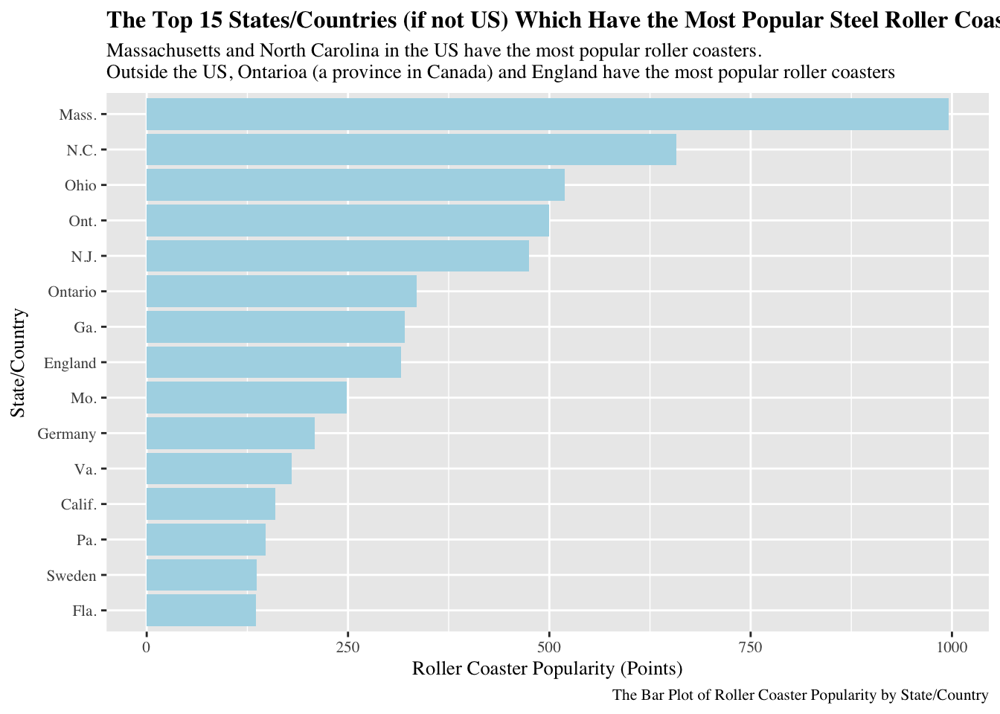
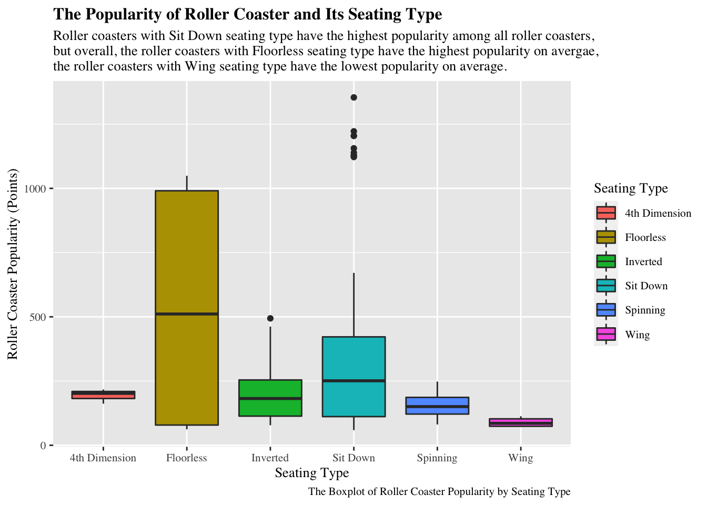

I found the Roller Coaster Data from Around the World dataset from Kaggle, which includes three seperate dataframes (Golden_Ticket_Award_Winners_Steel.csv, Golden_Ticket_Award_Winners_Wood.csv, and roller_coasters.csv). The data dictionary is also available in Kaggle website.
The questions I aim to answer with this dataset is exploring the relationship between the popularity of steel roller coasters and roller coasters’ features (such as speed, height, geological location, etc.). The intended audiences for this data analysis are people who enjoy riding roller coasters or people who are curious about different factors influencing the popularity of roller coasters.
We use points (points given to the roller coaster) to measure the popularity of roller coaster in this data analysis. More popular roller coasters are given higher points. Below is a statistical summary of Points variable in this data set taken from Kaggle website:
Rows: 2802 Columns: 10
── Column specification ────────────────────────────────────────────────────────
Delimiter: ","
chr (6): name, material_type, seating_type, manufacturer, park, status
dbl (4): speed, height, length, num_inversions
ℹ Use `spec()` to retrieve the full column specification for this data.
ℹ Specify the column types or set `show_col_types = FALSE` to quiet this message.
Rows: 180 Columns: 8
── Column specification ────────────────────────────────────────────────────────
Delimiter: ","
chr (4): Name, Park, Location, Supplier
dbl (4): Rank, Year Built, Points, Year of Rank
ℹ Use `spec()` to retrieve the full column specification for this data.
ℹ Specify the column types or set `show_col_types = FALSE` to quiet this message.
Expand To Learn More About Initial Data Wrangling Process
We only analyze steel roller coasters in this data analysis for simplicity, so we only select the roller coasters with steel material type. You can perform very similar analysis to wooden roller coasters. When we combine two datasets, there are some duplicated variables (park = Park, manufacturer = Supplier), so we remove them.
Data Visualizations for analysis
Which states/countries have the most popular roller coasters?
rc |>group_by(`State/Country`) |>summarize(popularity =mean(Points)) |>arrange(desc(popularity)) |>head(15) |>mutate(`State/Country`=fct_reorder(`State/Country`,popularity)) |>ggplot(aes(x=popularity, y=`State/Country`)) +geom_col(fill ='lightblue') +labs(x='Roller Coaster Popularity (Points)', y='State/Country', title="The Top 15 States/Countries (if not US) Which Have the Most Popular Steel Roller Coasters", subtitle="Massachusetts and North Carolina in the US have the most popular roller coasters. \nOutside the US, Ontarioa (a province in Canada) and England have the most popular roller coasters", caption ='The Bar Plot of Roller Coaster Popularity by State/Country') +theme(text=element_text(size=10, family="Times"), plot.title=element_text(size=12, face='bold'))

What seating type of roller coasters tend to has higher popularity?
rc |>ggplot(aes(x=seating_type, y=Points, fill =as.factor(seating_type))) +geom_boxplot() +labs(x='Seating Type', y='Roller Coaster Popularity (Points)', title="The Popularity of Roller Coaster and Its Seating Type", subtitle="Roller coasters with Sit Down seating type have the highest popularity among all roller coasters, \nbut overall, the roller coasters with Floorless seating type have the highest popularity on avergae, \nthe roller coasters with Wing seating type have the lowest popularity on average.", caption ='The Boxplot of Roller Coaster Popularity by Seating Type', fill ='Seating Type') +theme(text=element_text(size=10, family="Times"), plot.title=element_text(size=12, face='bold'))

Is there a relationship between speed and popularity of roller coaster in different states/countries?
top4_country = rc |>count(`State/Country`) |>arrange(desc(n)) |>head(4)rc |>filter(`State/Country`%in% top4_country$`State/Country`) |>ggplot(aes(x=speed, y=Points)) +geom_point() +geom_smooth(method ='lm') +facet_wrap(.~`State/Country`, ncol =2) +labs(x='Speed (mph)', y='Roller Coaster Popularity (Points)', title="The Popularity of Roller Coasters and Their Speeds in Top 4 States/Countries \nwhich Have the Most Roller Coaster Ratings", subtitle="We can see a relatively positive relationship (although not very strong due to small amount of data) \nbetween speed and roller coaster popularity in Ohio and Florida. \nHowever, there seems no positive relationship between speed and popularity of roller coaster in Quebec and Georgia.", caption ='The Scatterplot Between Speed and Roller Coaster Popularity by State/Country') +theme(text=element_text(size=10, family="Times"), plot.title=element_text(size=12, face='bold'))
Note that we only select top 4 state/countries which have the most roller coaster ratings to display the relationship between speed and popularity in this analysis because most state/countries have too few available ratings for roller coasters.
Summary
According to the data analyses, the distribution of points given to roller coasters is highly right skewed with lowest point = 59, highest point = 1354, and average points = 325. Massachusetts, North Carolina and Ohio in the US have the most popular roller coasters, while outside the US, Ontarioa in Canada and England have the most popular roller coasters. Roller coasters with floorless seating type are most popular on average in general, although several roller coasters with sit down seating type are extremely popular. There may exist positive relationship between speed of roller coasters and their popularity, but the association is not very strong and differ by roller coasters at different places.